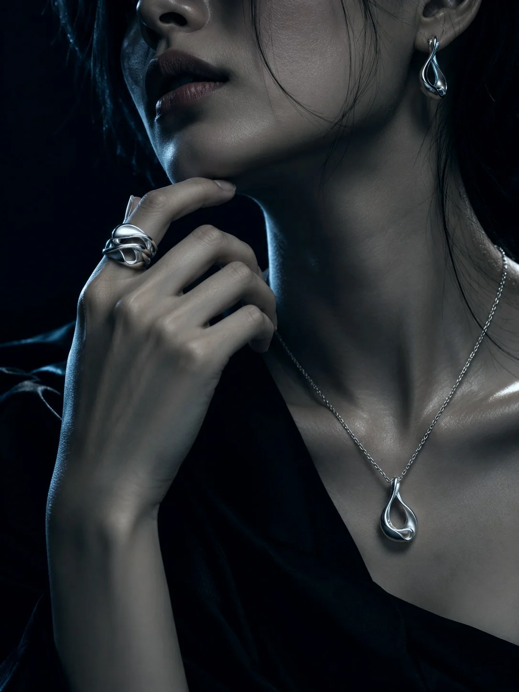

Trang sức điêu khắc đương đại tôn vinh bản sắc cá nhân
ORBIT tạo nên những vật thể trang sức như các tác phẩm điêu khắc thu nhỏ: tối giản về hình thức, giàu chiều sâu về bề mặt và được hoàn thiện để đồng hành cùng nhịp sống của người phụ nữ thành thị.
Bộ sưu tập bạc giới hạn
Mỗi thiết kế được phát triển từ một chuyển động, một quỹ đạo hoặc một lát cắt hình học. Các bề mặt được xử lý thủ công để mỗi tác phẩm giữ lại những nét khác biệt tinh tế.
Mở thư viện tác phẩmKhối kim loại, dấu ấn riêng
Mỗi tác phẩm ORBIT đi qua nhiều công đoạn tạo hình, xử lý bề mặt và hoàn thiện bằng tay. Dấu vết của quá trình chế tác không bị che giấu hoàn toàn mà trở thành một phần của ngôn ngữ thẩm mỹ.
01 — Tạo hình
Phát triển tỷ lệ và độ uốn từ mô hình trước khi chuyển sang bạc.
02 — Hoàn thiện bề mặt
Đánh xước, làm mờ và xử lý cạnh bằng tay để tạo chiều sâu ánh sáng.
03 — Kiểm tra
Kiểm tra độ thoải mái, bề mặt và độ hoàn thiện trước khi đóng gói.
Tạo hình để được ghi nhớ
ORBIT theo đuổi vẻ đẹp cô đọng: mỗi đường cong phải có lý do, mỗi khoảng trống đều tham gia vào hình khối. Trang sức không hoàn thiện diện mạo thay bạn mà trở thành một dấu hiệu nhỏ của cá tính đã có sẵn.
Đọc tuyên ngôn tạo hìnhTối giản có chủ đích
Giảm chi tiết trang trí để tập trung vào tỷ lệ, hình khối và bề mặt.
Cá nhân thay vì xu hướng
Thiết kế hướng đến khả năng đồng hành lâu dài thay vì vòng đời xu hướng ngắn.
